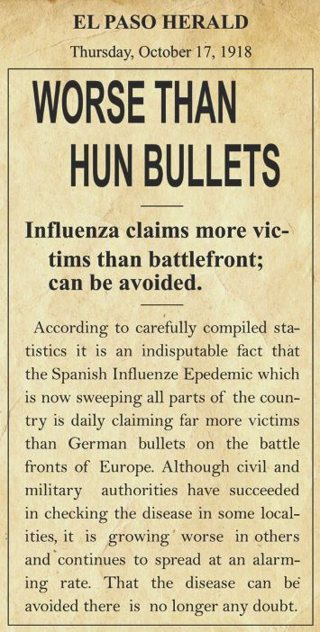
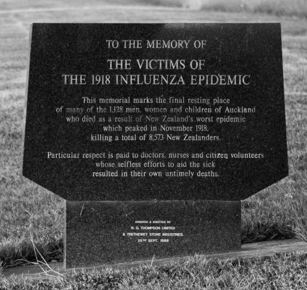

The Plague of 19181918 was the year that The Great War would end bringing some form of peace to Europe. Before this could happen though, an epidemic broke out. This was not just contained to one country or even a continent but the whole world suffered. 50 million people died in such a small amount of time (a higher body count than the war itself). It was not only the elderly or the ill that suffered but healthy men and women died due to this type of influenza.
|
||
Famous DeathsA majority of those that died due to the Spanish Flu were not peole that made the papers or starred in movies. They were your average mothers, fathers, sons and daughters. 50 million died (including medical personnel that tried to save lives) but many are never acknowledged. The famous were remembered and made it into the books. Here are a few that famous names that did not make it.
|
||
Find out if your ancestor died of the Spanish Flu"A majority of those that died due to the Spanish Flu were not peole that made the papers or starred in movies. They were your average mothers, fathers, sons and daughters. 50 million died but many are never acknowledged." An article on AncestorNews.com gives advice and helps individuals discover if they had a family member that died of the flue influenza of 1918. Not only is this an interesting article from the ancestor of someone that died during that time but they also give links that can help readers learn about their own family members that lived during that time. The Universit of Michigan put together an interesting website that lists many names of those that were around during the outbreak. A great place to start your research. (AncestorNews) |
||
| Thank you for visiting |